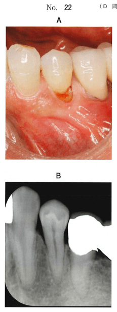

一時的に歯肉を排除する方法。歯頸部の修復（5級窩洞、くさび状欠損など）に必要。
処置の直前〜処置中に行う排除法。
| 方法 | 器具・材料 | 特徴・適応 |
|---|---|---|
| 器具による排除 | ガムリトラクター | 前歯5級窩洞、くさび状欠損。金属製・プラスチック製あり |
| 排除用綿糸 | 圧排コード（リトラクションコード） | 歯頸部全周の排除。薬剤含有で歯肉収斂効果 |
| 外科的切除 | 高周波電気メス、レーザー | 歯肉増殖時など |
これらの薬剤は歯肉収斂効果を発揮し、歯肉からの出血を抑制する。
時間をかけて行う排除法。
| タイミング | 使用する器具 | 目的 |
|---|---|---|
| 窩洞形成時 | ガムリトラクター、圧排コード | 歯肉を排除して窩洞形成を容易にする |
| 填塞時 | サービカルマトリックス | 歯頸部用の隔壁として使用 |
| 器具 | 用途 | 使用タイミング |
|---|---|---|
| ガムリトラクター | 歯肉排除 | 窩洞形成時 |
| 圧排コード | 歯肉排除 | 窩洞形成時 |
| サービカルマトリックス | 歯頸部用隔壁 | 填塞時 |
| Tofflemire型リテーナー | 2級修復用隔壁 | 填塞時 |
| Ivoryのシンプルセパレーター | 歯間分離（前歯部用） | 窩洞形成時 |
Ivoryのシンプルセパレーターは前歯部用。本症例（下顎小臼歯）には適応しない。
ペースメーカー使用患者には禁忌
55歳の男性。下顎左側第一小臼歯の変色を主訴として来院した。6か月前に気付いたが痛みがないためそのままにしていたという。検査の結果、コンポジットレジン修復を行うこととした。初診時の口腔内写真（別冊No.22A）とエックス線画像（別冊No.22B）を別に示す。
窩洞形成時に使用するのはどれか。2つ選べ。

【解説】写真から下顎小臼歯の頬側歯頸部に齲蝕（5級相当）が認められる。歯頸部の修復では窩洞形成時に歯肉排除が必要。圧排コードとガムリトラクターは歯肉排除に使用する。サービカルマトリックスは填塞時の隔壁であり、窩洞形成時には使用しない。Tofflemire型リテーナーは2級修復用。Ivoryのシンプルセパレーターは前歯部の歯間分離用で小臼歯には適応しない。